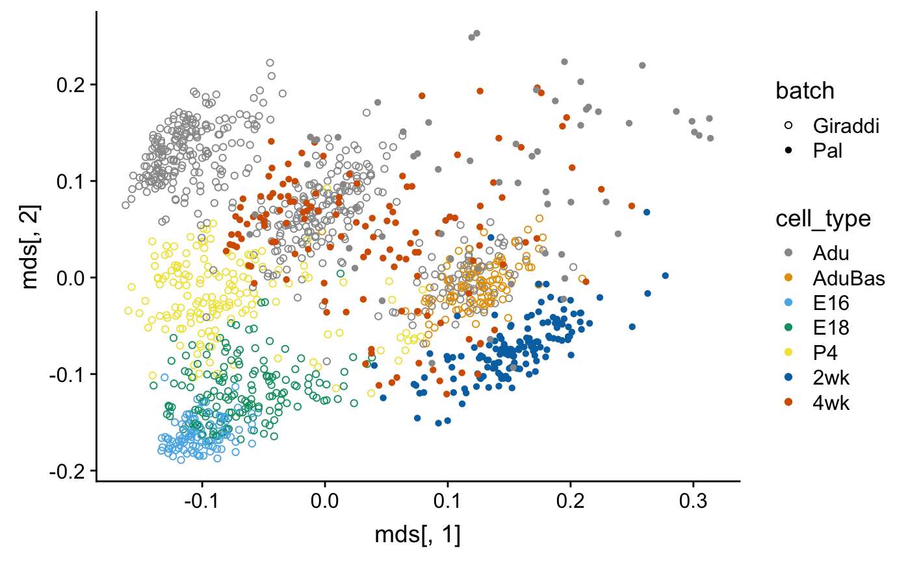

mammary-gland-devel.Rmdlibrary(corgi)
library(scmap)
library(knitr) # for printing nice looking tables
library(ggplot2) # for creating pretty plots
library(cowplot) # for creating panel of plots
library(forcats) # for concatenating factors
library(scmap) # for the compared feature selection method
library(dplyr)
library(scran)
library(GEOquery)
library(Matrix)
library(biomaRt)
mart <- useMart("ensembl",
dataset = "mmusculus_gene_ensembl",
host="www.ensembl.org" )con <- gzcon(
url("https://www.ncbi.nlm.nih.gov/geo/download/?acc=GSE95434&format=file&file=GSE95434%5FGeneCounts%2Etxt%2Egz")
)
txt <- readLines(con)
pal_raw <- read.table(file = textConnection(txt),header = T)
pal_raw[1:10,1:6]
#> GeneID Length X2wk.1 X2wk.2 X2wk.3 X2wk.4
#> 1 497097 3634 1 0 0 0
#> 2 100503874 3259 126 0 0 4
#> 3 100038431 1634 0 0 0 0
#> 4 19888 9747 0 0 0 0
#> 5 20671 3130 0 0 0 0
#> 6 27395 4203 0 0 1 0
#> 7 18777 2433 2264 2 0 135
#> 8 100503730 799 0 0 0 0
#> 9 21399 2847 126 61 8 74
#> 10 58175 2241 0 0 0 0pal <- SingleCellExperiment(assay = list(counts = as.matrix(pal_raw[,3:ncol(pal_raw)])))
dim(pal)
#> [1] 27179 346
pal_entrezGeneID <- pal_raw[,1]pal$cell_type <-
colnames(pal) %>%
lapply(FUN = function(x) strsplit(x,split = ".",fixed = T)[[1]][1]) %>%
lapply(FUN = function(x) gsub(pattern = "X",replacement = "",x = x)) %>%
unlist %>%
factor(levels = c("2wk","4wk","10wk"),ordered = T)
table(pal$cell_type)
#>
#> 2wk 4wk 10wk
#> 144 136 66# Change the names from entrezgene to mgi_symbol
features <- pal_entrezGeneID
out <- getBM(attributes = c("entrezgene", "mgi_symbol"),
values = features,
mart = mart,
filters = "entrezgene")
head(out)
#> entrezgene mgi_symbol
#> 1 100039596 Tcf24
#> 2 100042065 Gm3646
#> 3 100101919 Dnah7c
#> 4 100504323 Gm20172
#> 5 104086 Cyp27a1
#> 6 107527 Il1rl2
dim(out)
#> [1] 21035 2
out$is_unique <- !duplicated(out$mgi_symbol)
out$is_nonempty <- out$mgi_symbol!=""
out_unique_nonempty <- out %>% filter(is_unique) %>% filter(is_nonempty)Just to be sure
any(duplicated(out_unique_nonempty$mgi_symbol))
#> [1] FALSE
any(out_unique_nonempty$mgi_symbol=="")
#> [1] FALSETransform to MGI symbols
con <- gzcon(
url("https://www.ncbi.nlm.nih.gov/geo/download/?acc=GSE111113&format=file&file=GSE111113%5FTable%5FS1%5FFilterNormal10xExpMatrix%2Etxt%2Egz"))
txt <- readLines(con)
giraddi_raw <- read.delim2(file = textConnection(txt))
head(colnames(giraddi_raw))
#> [1] "gene_id" "transcript_id.s." "X"
#> [4] "E16_AAACGGGCATGTTCCC" "E16_AAAGCAAAGATGTAAC" "E16_AAATGCCAGCTCCTTC"
head(giraddi_raw$gene_id)
#> [1] ENSMUSG00000092341 ENSMUSG00000093674 ENSMUSG00000064357
#> [4] ENSMUSG00000064358 ENSMUSG00000040952 ENSMUSG00000057841
#> 22184 Levels: ENSMUSG00000000001 ENSMUSG00000000028 ... mL1-GFP_reporter
head(giraddi_raw$X) # the "X" column is where the MGI symbol for the gene names are stored
#> [1] Malat1 Rpl41 mt-Atp6 mt-Co3 Rps19 Rpl32
#> 21962 Levels: 0 0610005C13Rik 0610007N19Rik 0610007P14Rik ... Zzz3
# remove duplicated MGI symbols
giraddi_raw <- giraddi_raw[!duplicated(giraddi_raw$X),]
# remove empty string names
giraddi_raw <- giraddi_raw[giraddi_raw$X!="",]
giraddi <- SingleCellExperiment(assay = list(counts = as.matrix(giraddi_raw[,4:ncol(giraddi_raw)])))
rownames(giraddi) <- giraddi_raw$X
giraddi$cell_type <-
lapply(strsplit(colnames(giraddi),split = "_"),function(x) x[1]) %>%
as.character() %>%
as.factor()
levels(giraddi$cell_type)
#> [1] "Adu1" "Adu2" "AduBas" "E16" "E18" "P4"
giraddi$cell_type <- plyr::mapvalues(
x = giraddi$cell_type,
from = levels(giraddi$cell_type),
to = c("Adu", "Adu", "AduBas", "E16", "E18", "P4")
)shared_genes <- intersect(rownames(pal),rownames(giraddi))
pal <- pal[shared_genes,]
giraddi <- giraddi[shared_genes,]
length(shared_genes)
#> [1] 15314Filter out cells where less than 5% of the genes are expressed
table(pal$cell_type)
#>
#> 2wk 4wk 10wk
#> 144 136 66
pal <- pal[,colMeans(counts(pal)>0)>0.05]
table(pal$cell_type)
#>
#> 2wk 4wk 10wk
#> 142 133 59table(giraddi$cell_type)
#>
#> Adu AduBas E16 E18 P4
#> 2848 714 650 1008 840
giraddi <- giraddi[,colMeans(counts(giraddi)>0)>0.05]
table(giraddi$cell_type)
#>
#> Adu AduBas E16 E18 P4
#> 2769 714 650 1007 835set.seed(0)
corgi_output_MG_devel <- run_corgi(counts(pal),counts(giraddi))
#> [1] "2019-02-05 03:17:48 EST"
#> [1] "number of cores used"
#> [1] 7
#> [1] 15314
#> Time difference of 10.23887 mins
#> [1] "2019-02-05 03:28:02 EST"
#> [1] "number of cores used"
#> [1] 7
#> [1] 11451
#> Time difference of 10.18108 mins
#> [1] "2019-02-05 03:38:13 EST"
#> [1] "number of cores used"
#> [1] 7
#> [1] 8850
#> Time difference of 10.14658 mins
#> [1] "2019-02-05 03:48:22 EST"
#> [1] "number of cores used"
#> [1] 7
#> [1] 6983
#> Time difference of 10.12357 mins
#> [1] "2019-02-05 03:58:29 EST"
#> [1] "number of cores used"
#> [1] 7
#> [1] 5532
#> Time difference of 10.10129 mins
#> [1] "2019-02-05 04:08:35 EST"
#> [1] "number of cores used"
#> [1] 7
#> [1] 4453
#> Time difference of 10.08797 minsrowData(pal)$feature_symbols <- rownames(pal)
rowData(giraddi)$feature_symbols <- rownames(giraddi)
corgi_gene_set <- select_top_corgi_genes(corgi_output_MG_devel,n = 1000)
# mbn = abbrev for multiBatchNorm
mbn_out <- multiBatchNorm(pal,giraddi) HDG_ranking <- function(sce){
rowData(sce)$feature_symbol <- rownames(sce)
sce <- scmap::selectFeatures(sce)
return(rownames(sce)[order(rowData(sce)[["scmap_scores"]],decreasing = T,na.last = T)])
}
n <- length(corgi_gene_set)
gene_sets <- get_compared_gene_sets(
batch1_top_genes = HDG_ranking(mbn_out[[1]]),
batch1_name = "HDG(Pal)",
batch2_top_genes = HDG_ranking(mbn_out[[2]]),
batch2_name = "HDG(Giraddi)",
desired_size = n)
#> $x
#> [1] 559
#>
#> $y
#> [1] 558
gene_sets[["CorGI"]] <- corgi_gene_set
gene_sets <- gene_sets[c(5,1,2,3,4)]
lapply(gene_sets, length)
#> $CorGI
#> [1] 1000
#>
#> $`HDG(Pal)`
#> [1] 1000
#>
#> $`HDG(Giraddi)`
#> [1] 1000
#>
#> $Union
#> [1] 1000
#>
#> $Intersection
#> [1] 1000Subsample the Giraddi dataset for visualization
sample_cells <- function(object, n){
return(object[,sample(1:ncol(object),n)])
}
set.seed(0)
giraddi <- sample_cells(giraddi,1000)
cell_type <- forcats::fct_c(giraddi$cell_type,pal$cell_type)
batch <- c(rep("Giraddi",ncol(giraddi)),rep("Pal",ncol(pal)))
comb <- cbind(counts(giraddi),counts(pal))corgi_gene_set <- select_top_corgi_genes(corgi_output_MG_devel,n = 1000)
D <- (1-cor(comb[corgi_gene_set,],method = "spearman"))/2
mds <- cmdscale(D,k=2)
qplot(mds[,1],mds[,2],color = cell_type,shape = batch) +
scale_shape_manual(values = c(1,16)) +
scale_color_manual(values = c("#999999", "#E69F00", "#56B4E9", "#009E73", "#F0E442", "#0072B2", "#D55E00", "#CC79A7"))
con <- gzcon(
url("ftp://ftp.ncbi.nlm.nih.gov/geo/series/GSE110nnn/GSE110351/suppl/GSE110351_MG_EMP_LC_BC_raw_counts.csv.gz")
)
txt <- readLines(con)
wuidart_raw <- read.csv(file = textConnection(txt))
wuidart_raw[1:5,1:5]
#> X AAGAGGCA.AAGGAGTA AAGAGGCA.AAGGCTAT
#> 1 ENSMUSG00000000001.4 0 0
#> 2 ENSMUSG00000000003.15 0 0
#> 3 ENSMUSG00000000028.14 0 0
#> 4 ENSMUSG00000000031.15 0 164
#> 5 ENSMUSG00000000037.16 0 0
#> AAGAGGCA.ACTGCATA AAGAGGCA.CCTAGAGT
#> 1 1376 331
#> 2 0 0
#> 3 0 0
#> 4 0 1
#> 5 0 0wuidart <- SingleCellExperiment(assay = list(counts = as.matrix(wuidart_raw[,2:ncol(wuidart_raw)])))
# First column of gse is the gene names
rownames(wuidart) <- wuidart_raw[,1]Remove the spike-ins
Let us convert ENSEMBL to MGI symbols for the genes
head(rownames(wuidart))
#> [1] "ENSMUSG00000000001.4" "ENSMUSG00000000003.15" "ENSMUSG00000000028.14"
#> [4] "ENSMUSG00000000031.15" "ENSMUSG00000000037.16" "ENSMUSG00000000049.11"We need to remove the dots
f <- function(x){ strsplit(x,split = ".",fixed = T)[[1]][1] }
rownames(wuidart) <- unlist(lapply(rownames(wuidart), f))Does this cause any duplicates?
# Get the MGI symbols
out <- getBM(attributes = c("ensembl_gene_id", "mgi_symbol"),
values = rownames(wuidart),
mart = mart,
filters = "ensembl_gene_id")
# Remove duplicates
out <- out[(!duplicated(out$ensembl_gene_id)) & (!duplicated(out$mgi_symbol)),]
wuidart <- wuidart[rownames(wuidart) %in% out$ensembl_gene_id,]
rownames(wuidart) <- plyr::mapvalues(rownames(wuidart),
from = out$ensembl_gene_id,
to = out$mgi_symbol)Now we need to get the metadata
gse <- getGEO("GSE110351")
md_raw <- as.character(gse$GSE110351_series_matrix.txt.gz$title)
length(md_raw) == ncol(wuidart)
#> [1] TRUE
md <- data.frame(raw = md_raw,stringsAsFactors = F)The cell barcodes are the last 17 characters (including the dash)
md$raw[1:5]
#> [1] "50 Cell Control Basal TAAGGCGA-CTCTCTAT"
#> [2] "50 Cell Control Luminal CGTACTAG-CTCTCTAT"
#> [3] "Single Basal Cell AGGCAGAA-CTCTCTAT"
#> [4] "Single Basal Cell TCCTGAGC-CTCTCTAT"
#> [5] "Single Basal Cell GGACTCCT-CTCTCTAT"substrRight <- function(x, n){
substr(x, nchar(x)-n+1, nchar(x))
}
md$barcodes <- unlist(lapply(md$raw,function(x) substrRight(x,17)))
md$barcodes <- gsub("-",".",md$barcodes)
md <- md[order(md$barcodes),]
wuidart <- wuidart[,sort(colnames(wuidart))]
all(colnames(wuidart) == md$barcodes)
#> [1] TRUEremoveRight <- function(x, n){
substr(x, 1, nchar(x)-n)
}
md$raw <- unlist(lapply(md$raw,function(x) removeRight(x,18)))
table(md$raw)
#>
#> 50 Cell Control Basal 50 Cell Control Embryonal Progenitor
#> 1 1
#> 50 Cell Control Luminal Negative Control
#> 1 4
#> Single Basal Cell Single Embryonal Progenitor Cell
#> 118 137
#> Single Luminal Cell
#> 122md$is_single_cell <- grepl("Single",md$raw)
md$cell_type <- NA
for(ct in c("Basal","Luminal","Embryonal Progenitor")){
md$cell_type[grepl(ct,md$raw)] <- ct
}wuidart$is_single_cell <- md$is_single_cell
wuidart$cell_type <- factor(md$cell_type)
wuidart <- wuidart[,wuidart$is_single_cell]Did we miss anything?
bach_np1 <- readMM(gzcon(url("ftp://ftp.ncbi.nlm.nih.gov/geo/samples/GSM2834nnn/GSM2834498/suppl/GSM2834498_NP_1_matrix.mtx.gz")))
dim(bach_np1)
#> [1] 27998 2249
bach_np2 <- readMM(gzcon(url("ftp://ftp.ncbi.nlm.nih.gov/geo/samples/GSM2834nnn/GSM2834499/suppl/GSM2834499_NP_2_matrix.mtx.gz")))
dim(bach_np2)
#> [1] 27998 2127
"ftp://ftp.ncbi.nlm.nih.gov/geo/series/GSE106nnn/GSE106273/suppl/GSE106273_combined_genes.tsv.gz" %>%
url %>% gzcon %>% readLines %>% textConnection %>% read.table(stringsAsFactors = F) ->
bach_genes
bach_genes[1:5,]
#> V1 V2
#> 1 ENSMUSG00000051951 Xkr4
#> 2 ENSMUSG00000089699 Gm1992
#> 3 ENSMUSG00000102343 Gm37381
#> 4 ENSMUSG00000025900 Rp1
#> 5 ENSMUSG00000109048 Rp1
set.seed(0)
bach_np1 <- sample_cells(bach_np1,500)
bach_np2 <- sample_cells(bach_np2,500)
bach_np <- cbind(bach_np1,bach_np2)
bach_np <- SingleCellExperiment(assay = list(counts = as.matrix(bach_np)))
rownames(bach_np) <- bach_genes[,2]
bach_np$cell_type <- "Adu"
bach_np$cell_type <- factor(bach_np$cell_type)
batches[["Bach_NP"]] <- bach_np
lapply(
X = batches,
FUN = function(sce){
shared_genes <- intersect(rownames(giraddi),rownames(sce))
combined <- cbind(counts(giraddi[shared_genes,]),
counts(sce[shared_genes,]))
lapply(
X = gene_sets,
FUN = function(gene_set) {
gene_set <- intersect(gene_set, shared_genes)
D <-
(1 - cor(combined[gene_set, ], method = "spearman")) / 2
return(cmdscale(D, k = 2))
}
)
}) -> embeddings_mds
lapply(
X = batches,
FUN = function(sce){
shared_genes <- intersect(rownames(giraddi),rownames(sce))
mbn_out <- multiBatchNorm(giraddi[shared_genes,],
sce[shared_genes,])
lapply(
X = gene_sets,
FUN = function(gene_set) {
gene_set <- intersect(gene_set, shared_genes)
mnn.out <-
mnnCorrect(logcounts(mbn_out[[1]][gene_set, ]),
logcounts(mbn_out[[2]][gene_set, ]))
t.mnn <- as.matrix(t(do.call(cbind, mnn.out$corrected)))
prcomp(t.mnn, rank = 2)$x
}
)
}) -> embeddings_mnnmy_shape_palette <- c(1,16)
my_color_palette <- c("#999999", "#E69F00", "#56B4E9", "#009E73", "#F0E442", "#0072B2", "#D55E00", "#CC79A7")
get_scatterplots <- function(embeddings, batch, cell_type){
lapply(X = names(gene_sets),
FUN = function(gs_name) {
emb <- embeddings[[gs_name]]
plot_dimensionality_reduction(emb, as.factor(batch), cell_type) +
scale_shape_manual(values = my_shape_palette) +
scale_color_manual(values = my_color_palette) +
ggtitle(paste0(gs_name, ", ", round(corgi::batch_mixing(emb, batch), 2)))
})
}color_palettes <-
list(Pal = my_color_palette[c(1, 6, 7)],
Wuidart = my_color_palette[c(6, 7, 8)],
Bach_NP = my_color_palette[c(1)])
get_panel_for_dr <- function(embeddings_dr, emb_name,gene_sets_use){
lapply(
X = names(batches),
FUN = function(batch_name) {
sce <- batches[[batch_name]]
cell_type <- forcats::fct_c(giraddi$cell_type,
sce$cell_type)
batch <-
c(rep("Giraddi", ncol(giraddi)), rep(batch_name, ncol(sce)))
get_scatterplots(embeddings_dr[[batch_name]],
as.factor(batch),
cell_type) -> plts
plts <- plts[gene_sets_use]
get_color_legend(cell_type[batch == batch_name],
color_palettes[[batch_name]],
legend.title = batch_name) -> plts[[length(plts)+1]]
plts[["nrow"]] <- 1
plts[["rel_widths"]] <- c(rep(2,length(gene_sets_use)), 1)
do.call(what = plot_grid, args = plts)
}
) -> panel_rows
get_color_legend(cell_type[batch == "Giraddi"],
my_color_palette,
legend.title = "Giraddi",
legend.position = "bottom") ->
giraddi_color_lgnd
get_axes_legend(emb_name) -> axes_lgnd
panel_rows[[4]] <-
plot_grid(axes_lgnd,
giraddi_color_lgnd,
nrow = 1,
rel_widths = c(1, 3))
panel_rows[["labels"]] <- LETTERS[1:3]
panel_rows[["nrow"]] <- 4
panel_rows[["rel_heights"]] <- c(2, 2, 2, 1)
do.call(what = plot_grid, args = panel_rows)
}mnn_plots <- get_panel_for_dr(embeddings_mnn,"MNNPC",gene_sets_use = 1:3)
mds_plots <- get_panel_for_dr(embeddings_mds,"MDS",gene_sets_use = 1:3)ggsave(filename = "MG_devel_MNN.eps",device = "eps",plot = mnn_plots,path = "~/CorGI_figures/MG_devel",width = 6,height = 6)
ggsave(filename = "MG_devel_MDS.eps",device = "eps",plot = mds_plots,path = "~/CorGI_figures/MG_devel",width = 6,height = 6)